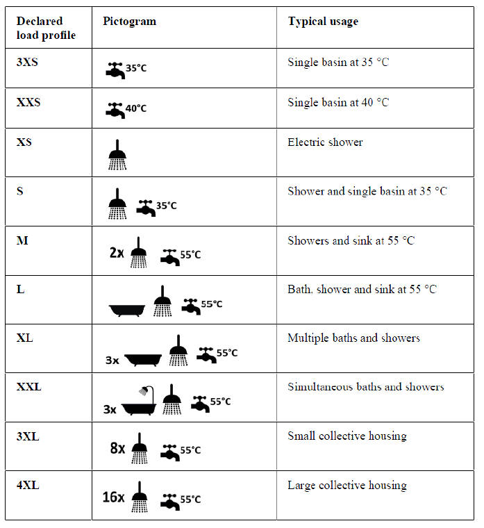
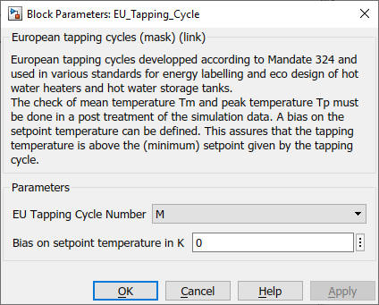

Path: CARNOT/Load/Hot_Water_Tapping
Purpose
Hot water consumption with an
energy profile according to the european tapping cycles.
Description
Domestic hot water
consumption defined by the European Tapping Cycles, given for example in the
[European Commission
Regulation No. 814/2013]. The cycles were originally developped for the Mandate 324
in 2002 [European Commission 2002]. The tapping cycles apply to
different water heater systems [European Commission
2018].
The block uses the
DHW_Energy_Tapping block since the tapping cycles are mainly based on the tapped
energy. The different tappings in the cycle define a mean temperature (Tm)
or a peak temperature (Tp) to be reached during the tapping. The check
of Tm and Tp must be done in a post treatment of the simulation data.
A bias on the setpoint temperature can be defined. This assures that the tapping
temperature is above the (minimum) setpoint given by the tapping cycle.
Tapping cycles can vary from 3XS to 4XL.

Table : Presentation of the typical usage of a declared load profile as a pictogram on the product label of a dedicated water heater (source: QAIST 2012)
A description of the model and the EU tapping cycles can be
found in the presentation of
[Hafner 2021] at the Carnot User Meeting 2021.
More informations are available, see chapter Literature below.
Parameters and Dialog Box

Literature
European Commission reglulation (EU) No 814/2013 of 2 August 2013
European
Commission 2018: Guidelines accompanying EU regluations 811/2013,812/2013,
813/2013, 814/2013, 2015/1187 and 2015/1189
dowload (09/02/2020) from
https://ec.europa.eu/energy/sites/ener/files/documents/guidelinesspacewaterheaters_final.pdf
European Commission 2002: M 324, Mandate to CEN and CENELEC
for the elaboratiob and adoption of measurement standards for household
appliances
download (09/02/2020) from
https://law.resource.org/pub/eu/mandates/m324.pdf
Characteristics
Direct Feedthrough No
Sample
time
none
Vectorized
No